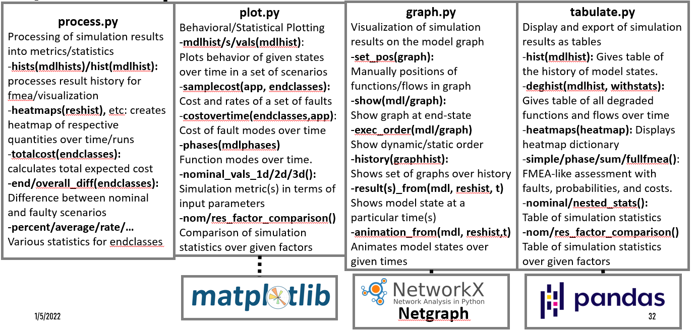

fmdtools.resultdisp package
{kind=link}
The resultdisp package is organized into the fmdtools.resultdisp.process, fmdtools.resultdisp.plot, fmdtools.resultdisp.graph, and fmdtools.resultdisp.tabulate modules, as shown above. fmdtools.resultdisp.process is used to process simulation results into convenient metrics and statistics for an analysis. The rest of the modules can be thought of as convenience interfaces for their respective packages, where:
plotcreates plots inmatplotlibfor simulation results (e.g., model histories, end-state classifications, etc).graphcreates visualizations of the model graph usingNetworkX,Netgraphand/orGraphvizpackages.tabulatecreatespandastables of desired simulation metrics.
The model reference for each of these is provided below:
fmdtools.resultdisp.graph
Description: Gives graph-level visualizations of the model using installed renderers.
- Public user-facing methods:
set_pos(): Set graph node positions manuallyshow(): Plots a single graph object g. Has options for heatmaps/overlays and matplotlib/graphviz/pyvis renderers.exec_order(): Displays the propagation order and type (dynamic/static) in the model. Works with matplotlib/graphviz renderers.history(): Displays plots of the graph over time given a dict history of graph objects. Works with matplotlib/graphviz renderers.result_from(): Plots a representation of the model graph at a specific time in the results history. Works with matplotlib/graphviz renderers.results_from(): Plots a set of representations of the model graph at given times in the results history. Works with matplotlib/graphviz renderers.animation_from(): Creates an animation of the model graph using results at given times in the results history. Works with matplotlib renderers.
- Private class:
GraphInteractor: Used to set nodes in set_pos
- class fmdtools.resultdisp.graph.GraphInteractor(g, gtype='bipartite', pos=[], **kwargs)
Bases:
objectA simple interactive graph for consistent node placement, etc–used in set_pos to set node positions
- epsilon = 0.2
- get_closest_point(event)
Finds the closest node to the given click to see if it should be moved
- on_button_press(event)
Determines what to do when a button is pressed
- on_button_release(event)
Determines what to do when the mouse is released
- on_mouse_move(event)
Changes the node position when the user drags it
- print_pos()
- refresh_plot()
Refreshes the plot with the new positions.
- showverts = True
- fmdtools.resultdisp.graph.animation_from(mdl, reshist, times='all', faultscen=[], gtype='bipartite', figsize=(6, 4), showfaultlabels=True, scale=1, show=False, pos=[], colors=['lightgray', 'orange', 'red'])
Creates an animation of the model graph using results at given times in the results history. To view, use %matplotlib qt from spyder or %matplotlib notebook from jupyter To save (or do anything useful)h, make sure ffmpeg is installed https://www.wikihow.com/Install-FFmpeg-on-Windows
- Parameters
mdl (model) – The model the faults were run in.
reshist (dict) – A dictionary of results (from process.hists() or process.typehist() for the typegraph option)
times (list or 'all') – The times in the history to plot the graph at. If ‘all’, plots them all
faultscen (str, optional) – Name of the fault scenario. The default is [].
gtype (str, optional) – The type of graph to plot (normal or bipartite). The default is ‘bipartite’.
showfaultlabels (bool, optional) – Whether or not to list faults on the plot. The default is True.
scale (float, optional) – Scale factor for the node/label sizes. The default is 1.
show (bool, optional) – Whether to show the plot at the end (may be redundant). The default is True.
pos (dict, optional) – dict of node positions (if re-using positions). The default is [].
- fmdtools.resultdisp.graph.exec_order(mdl, renderer='matplotlib', gtype='bipartite', colors=['lightgray', 'cyan', 'teal'], show_dyn_order=True, title='Function Execution Order', legend=True, **kwargs)
Displays the execution order/types of the model, where the functions and flows in the static step are highlighted and the functions in the dynamic step are listed (with corresponding order)
- Parameters
mdl (fmdtools Model) – Model of the system to visualize.
renderer ('matplotlib' or 'graphviz') – Renderer to use for the graph
gtype ('normal'/'bipartite', optional) – Representation of the model to use. The default is ‘bipartite’.
colors (list, optional) – Colors to use for unexecuted functions, static propagation steps, and dynamic functions. The default is [‘lightgray’, ‘cyan’,’teal’].
show_dyn_order (bool, optional) – Whether to label the execution order for dynamic functions. The default is True.
title (str, optional) – Title for the plot. The default is “Function Execution Order”.
legend (bool, optional) – Whether to show a legend. The default is True.
**kwargs (see arguments for the respective renderers) –
- Returns
- Return type
tuple of form (figure, axis)
- fmdtools.resultdisp.graph.get_graph_annotations(g, gtype='bipartite')
Helper method that returns labels/lists degraded nodes for the plot annotations
- fmdtools.resultdisp.graph.get_graph_pos(mdl, pos, gtype)
Helper function for getting the right graph/positions from a model
- fmdtools.resultdisp.graph.get_plotlabels(g, reshist, t_ind)
Assigns labels to a graph g from reshist at time t so that it can be plotted
- Parameters
g (networkx graph) – The graph to get labels for
reshist (dict) – The dict of results history over time (from process.hists() or process.typehist() for the typegraph option)
t_ind (float) – The time in reshist to update the graph at
- Returns
labels (dict) – labels for the graph.
faultfxns (dict) – functions with faults in them
degfxns (dict) – functions that are degraded
degflows (dict) – flows that are degraded
faultlabels (dict) – names of each fault
faultedges (dict) – edges with faults in them
faultedgeflows (dict) – names of flows that are degraded on each edge
edgelabels (dict) – labels of each edge
- fmdtools.resultdisp.graph.get_pos_robust(g, gtype='bipartite', pos={})
Tries to get the best positions for the graph
- fmdtools.resultdisp.graph.gv_colors(g, gtype, colors, heatmap, cmap, faultnodes, degradednodes, faultedges=[], edgeflows={}, functions=[], flows=[], highlight=[])
creates dictonary of node/edge colors for a graphviz plot
- Parameters
g (nx graph object or model) – The multigraph to plot
gtype (string, optional) – Type of graph input to show values are ‘normal’, ‘bipartite’, or ‘typegraph’.
colors (list, optional) – List of colors to use for nominal, degraded, and faulty functions/flows. Default is: [‘lightgray’,’orange’, ‘red’]
heatmap (dict, optional) – A heatmap dictionary to overlay on the plot. The default is {}.
cmap (mpl colormap) – Colormap to use for heatmap visualization
faultnodes (list) – list of the nodes with faults
degradednodes (list) – list of the nodes with degraded functionality
faultedges (list) – list of edges(flows) that have faults. Only used for ‘normal’ graph. The default is [].
edgeflows (dictionary) – dictionary of edges (n1,n2) and edge/flow names. The default is {}.
functions (list, optional) – list of function nodes. Only used for ‘bipartite’ graph. The default is [].
flows (list, optional) – list of flow nodes. Only used for ‘bipartite’ graph. The default is [].
- Returns
colors_dict – dictionary withe keys as nodes/edges and values colors.
- Return type
dictionary
- fmdtools.resultdisp.graph.gv_execute_order_legend(colors)
Provides legend for model execution order in the graphviz toolkit
- fmdtools.resultdisp.graph.gv_import_check()
Checks if graphviz is installed on the system before plotting.
- fmdtools.resultdisp.graph.history(ghist, **kwargs)
Displays plots of the graph over time given a dict history of graph objects
- Parameters
ghist (dict) –
A dictionary of the history of the graph over time with structure: {time: graphobject}, where
time is the time where the snapshot of the graph was recorded
graphobject is the snapshot of the graph at that time
**kwargs (kwargs) – keyword arguments for graph.show()
- Returns
figobjs – Set of graph objects from graph.show() for the given renderer
- Return type
dict
- fmdtools.resultdisp.graph.plot_bipgraph(g, labels, faultfxns, degnodes, faultlabels, faultscen=[], time=0, showfaultlabels=True, scale=1, pos=[], show=True, colors=['lightgray', 'orange', 'red'], title=[], functions=[], flows=[])
Plots a bipartite graph. Used in other functions
- fmdtools.resultdisp.graph.plot_gv_bipartite(g, faultnodes, degradednodes, faultlabels, faultscen, time, showfaultlabels, colors_dict, functions, flows, edges, dot)
Plots a bipartite graph representation using the graphviz toolkit. Used in other functions
- fmdtools.resultdisp.graph.plot_gv_normgraph(g, edgeflows, faultnodes, degradednodes, faultflows, faultlabels, faultedges, faultscen, time, showfaultlabels, colors_dict, dot)
Plots a normal graph representation using the graphviz toolkit. Used in other functions
- fmdtools.resultdisp.graph.plot_normgraph(g, labels, faultfxns, degfxns, degflows, faultlabels, faultedges, faultedgeflows, faultscen, time, showfaultlabels, edgeflows, scale=1, pos=[], show=True, colors=['lightgray', 'orange', 'red'], title=[], show_edgelabels=True)
Plots a standard graph. Used in other functions
- fmdtools.resultdisp.graph.result_from(mdl, reshist, time, renderer='matplotlib', gtype='bipartite', **kwargs)
Plots a representation of the model graph at a specific time in the results history.
- Parameters
mdl (model) – The model the faults were run in.
reshist (dict) – A dictionary of results (from process.hists() or process.typehist() for the typegraph option)
time (float) – The time in the history to plot the graph at.
renderer ('matplotlib' or 'graphviz') – Renderer to use to plot the graph. Default is ‘matplotlib’
gtype (str, optional) – The type of graph to plot (normal or bipartite). The default is ‘bipartite’.
OPTIONS (MATPLOTLIB) –
---------- –
faultscen (str, optional) – Name of the fault scenario. The default is [].
showfaultlabels (bool, optional) – Whether or not to list faults on the plot. The default is True.
scale (float, optional) – Scale factor for the node/label sizes. The default is 1.
pos (dict, optional) – dict of node positions (if re-using positions). The default is [].
- fmdtools.resultdisp.graph.results_from(mdl, reshist, times, renderer='matplotlib', gtype='bipartite', **kwargs)
Plots a set of representations of the model graph at given times in the results history.
- Parameters
mdl (model) – The model the faults were run in.
reshist (dict) – A dictionary of results (from process.hists() or process.typehist() for the typegraph option)
times (list or 'all') – The times in the history to plot the graph at. If ‘all’, plots them all
renderer ('matplotlib' or 'graphviz' or) – Renderer to use to plot the graph. Default is ‘matplotlib’
gtype (str, optional) – The type of graph to plot (normal or bipartite). The default is ‘bipartite’.
OPTIONS (MATPLOTLIB) –
---------- –
faultscen (str, optional) – Name of the fault scenario. The default is [].
showfaultlabels (bool, optional) – Whether or not to list faults on the plot. The default is True.
scale (float, optional) – Scale factor for the node/label sizes. The default is 1.
pos (dict, optional) – dict of node positions (if re-using positions). The default is [].
- Returns
frames – Dictionary of mpl figures keyed at each time {time:fig}
- Return type
Dict
- fmdtools.resultdisp.graph.set_pos(g, gtype='bipartite', **kwargs)
Sets the position of nodes for plots in resultdisp.graph using a graphical tool. Note: make sure matplotlib is set to plot in an external window (e.g using ‘%matplotlib qt)
- Parameters
g (networkx graph or model) – normal or bipartite graph of the model of interest
gtype ('normal' or 'bipartite', optional) – Type of graph to plot. The default is ‘normal’.
**kwargs (kwargs) – keyword arguments for graph.show_matplotlib
- Returns
p – Graph Iterator (in resultdisp.Graph)
- Return type
GraphIterator
- fmdtools.resultdisp.graph.show(g, gtype='bipartite', renderer='matplotlib', filename='', **kwargs)
Plots a single graph object g.
- Parameters
g (networkx graph or model) – The multigraph to plot
gtype ('normal' or 'bipartite') – Type of graph input to show–normal (multgraph) or bipartite
renderer ('matplotlib' or 'graphviz' or 'pyvis') – Renderer to use with the drawing. Renderer must be installed. Default is ‘matplotlib’
filename (string, optional) – the filename for the output. The default is ‘’ (in which a file is not saved except in pyvis).
**kwargs (dictionary) –
- keyword arguments for the individual methods. See the documentation for
graph.show_graphviz graph.show_maplotlib graph.show_pyvis
for more information on these arguments
- fmdtools.resultdisp.graph.show_graphviz(g, gtype='bipartite', faultscen=[], time=[], filename='', filetype='png', showfaultlabels=True, highlight=[], colors=['lightgray', 'orange', 'red'], heatmap={}, cmap=<matplotlib.colors.LinearSegmentedColormap object>, **kwargs)
Translates an existing nx graph to a graphviz graph. Saves the graph output and dot file. Called from show() by passing in graphviz=True and filename
- Parameters
g (nx graph object or model) – The multigraph to plot
gtype (string, optional) – Type of graph input to show values are ‘normal’, ‘bipartite’, or ‘typegraph’. The default is ‘normal’.
filename (string, optional) – the filename for the rendered output (if any). The default is ‘’ (in which the file is not saved).
filetype (string) – Type of file to save the figure as (if saving)
faultscen (str, optional) – Name of the fault scenario (for the title). The default is [].
time (float, optional) – Time of fault injection. The default is [].
showfaultlabels (bool, optional) – Whether or not to label the faults on the functions. The default is True.
highlight (list, optional) – Functions/flows to highlight using [faulty functions, degraded functions, degraded flows] labelling scheme. Used for custom overlays. Default is []
colors (list, optional) – List of colors to use for nominal, degraded, and faulty functions/flows. Default is: [‘lightgray’,’orange’, ‘red’]
heatmap (dict, optional) – A heatmap dictionary to overlay on the plot. The default is {}.
cmap (mpl colormap) – Colormap to use for heatmap visualization
**kwargs (dictionary) – dictionary of graphviz attributes used to customize the output. this includes layout, overlap, node padding, node separation, font, fontsize, etc. see http://www.graphviz.org/doc/info/attrs.html for all options
- Returns
dot
- Return type
a graphviz object
- fmdtools.resultdisp.graph.show_matplotlib(g, gtype='bipartite', filename='', filetype='png', pos=[], scale=1, faultscen=[], time=[], figsize=(6, 4), showfaultlabels=True, highlight=[], colors=['lightgray', 'orange', 'red'], heatmap={}, cmap=<matplotlib.colors.LinearSegmentedColormap object>, fig=[])
Plots a single graph object g using matplotlib
- Parameters
g (networkx graph or model) – The multigraph to plot
gtype ('normal' or 'bipartite') – Type of graph input to show–normal (multgraph) or bipartite
filename (string) – Name to give the saved file, if saved. Default is ‘’ (not saving the file)
filetype (string) – Type of file to save the figure as (if saving)
pos (dict) – Positions for nodes
scale (float) – Changes sizes of nodes in bipartite graph
faultscen (str, optional) – Name of the fault scenario (for the title). The default is [].
time (float, optional) – Time of fault injection. The default is [].
showfaultlabels (bool, optional) – Whether or not to label the faults on the functions. The default is True.
highlight (list, optional) – Functions/flows to highlight using [faulty functions, degraded functions, degraded flows] labelling scheme. Used for custom overlays. Default is []
colors (list, optional) – List of colors to use for nominal, degraded, and faulty functions/flows. Default is: [‘lightgray’,’orange’, ‘red’]
heatmap (dict, optional) – A heatmap dictionary to overlay on the plot. The default is {}.
cmap (mpl colormap) – Colormap to use for heatmap visualizations
fig (mpl figure) – Current matplotlib figure to plot on
- Returns
fig, ax – Matplotlib figure object of the drawn graph
- Return type
matplotlib figure/axis
- fmdtools.resultdisp.graph.show_pyvis(g, gtype='typegraph', filename='typegraph', width=1000, filt=True, physics=False, notebook=False)
Method for plotting graphs with pyvis. Produces interactive HTML!
- Parameters
g (networkx graph or model) – Graph to plot or fmdtools model (which will be used to get the graph)
gtype ('hierarchical'/'bipartite'/'component', optional) – Type of model graph to plot The default is ‘hierarchical’.
filename (str, optional) – File to save the html to. The default is “typegraph.html”.
width (int, optional) – Width of the frame in px. The default is 1000.
filt (Dict/Bool, optional) – Whether to display sliders. The default is True.
physics (Bool, optional) – Whether to use physics during node placement. The default is False.
- Returns
n – pyvis object of the drawn graph
- Return type
pyvis object
- fmdtools.resultdisp.graph.update_bipplot(t_ind, reshist, g, pos, faultscen=[], showfaultlabels=True, scale=1, show=True, colors=['lightgray', 'orange', 'red'], **kwargs)
Updates a bipartite graph plot at a given timestep t_ind given the result history reshist
- fmdtools.resultdisp.graph.update_graphplot(t_ind, reshist, g, pos, faultscen=[], showfaultlabels=True, scale=1, show=True, colors=['lightgray', 'orange', 'red'], **kwargs)
Updates a normal graph plot at a given timestep t_ind given the result history reshist
- fmdtools.resultdisp.graph.update_gv_bipplot(t_ind, reshist, g, faultscen=[], showfaultlabels=True, colors=['lightgray', 'orange', 'red'], heatmap={}, cmap=<matplotlib.colors.LinearSegmentedColormap object>, **kwargs)
graphviz helper: updates a bipartite graph plot at a given timestep t_ind given the result history reshist
- fmdtools.resultdisp.graph.update_gv_graphplot(t_ind, reshist, g, faultscen=[], showfaultlabels=True, colors=['lightgray', 'orange', 'red'], heatmap={}, cmap=<matplotlib.colors.LinearSegmentedColormap object>, **kwargs)
graphviz helpwer: Updates a normal graph plot at a given timestep t_ind given the result history reshist
- fmdtools.resultdisp.graph.update_typegraphplot(t_ind, reshist, g, pos, faultscen=[], showfaultlabels=True, scale=1, show=True, colors=['lightgray', 'orange', 'red'], **kwargs)
Updates a typegraph-stype plot at a given timestep t_ind given the result history reshist
fmdtools.resultdisp.plot
Description: Plots quantities of interest over time using matplotlib.
- Uses the following methods:
mdlhist(): plots function and flow histories over time (with different plots for each function/flow)mdlhistvals(): plots function and flow histories over time on a single plotmdlhists(): plots function and flow histories over time with multiple scenarios on the same plotnominal_vals_1d(): plots the end-state classification of a system over a (1-D) range of nominal runsnominal_vals_2d(): plots the end-state classification of a system over a (2-D) range of nominal runsnominal_vals_3d(): plots the end-state classification of a system over a (3-D) range of nominal runsnominal_factor_comparison(): gives a bar plot of nominal simulation statistics over given factorsresilience_factor_comparison(): gives a bar plot of fault simulation statistics over given factorsphases(): plots the phases of operation that the model progresses through.samplecost(): plots the costs for a single fault sampled by a SampleApproach over time with ratessamplecosts(): plots the costs for a set of faults sampled by a SampleApproach over time with rates on separate plotscostovertime(): plots the total cost/explected cost of a set of faults sampled by a SampleApproach over time
- fmdtools.resultdisp.plot.costovertime(endclasses, app, costtype='expected cost')
Plots the total cost or total expected cost of faults over time.
- Parameters
endclasses (dict) – dict with rate,cost, and expected cost for each injected scenario (e.g. from run_approach())
app (sampleapproach) – sample approach used to generate the list of scenarios
costtype (str, optional) – type of cost to plot (‘cost’, ‘expected cost’ or ‘rate’). The default is ‘expected cost’.
- fmdtools.resultdisp.plot.dyn_order(mdl, rotateticks=False, title='Dynamic Run Order')
Plots the run order for the model during the dynamic propagation step used by dynamic_behavior() methods, where the x-direction is the order of each function executed and the y are the corresponding flows acted on by the given methods.
- Parameters
mdl (Model) – fmdtools model
rotateticks (Bool, optional) – Whether to rotate the x-ticks (for bigger plots). The default is False.
title (str, optional) – String to use for the title (if any). The default is “Dynamic Run Order”.
- Returns
fig (figure) – Matplotlib figure object
ax (axis) – Corresponding matplotlib axis
- fmdtools.resultdisp.plot.mdlhist(mdlhist, fault='', time=0, fxnflows=[], cols=2, returnfigs=False, legend=True, timelabel='Time', units=[], phases={}, modephases={}, label_phases=True)
Plots all states of the model at a time given a model history on separate plots.
- Parameters
mdlhist (dict) – History of states over time. Can be just the scenario states or a dict of scenario states and nominal states per {‘nominal’:nomhist,’faulty’:mdlhist}
fault (str, optional) – Name of the fault (for the title). The default is ‘’.
time (float, optional) – Time of fault injection. The default is 0.
fxnflows (list, optional) – List of functions and flows to plot. The default is [], which returns all.
cols (int, optional) – columns to use in the figure. The default is 2.
returnfigs (bool, optional) – Whether to return the figure objects in a list. The default is False.
legend (bool, optional) – Whether the plot should have a legend for faulty and nominal states. The default is true.
timelabel (str, optional) – Label to use for the x-axes (e.g., seconds, minutes). Default is “time”.
units (dict, optional) – Labels to use for the y-axes (e.g., power, voltage). Default is ‘’
phases (dict, optional) – Phase dictionary from process.modephases. Overlays lines over function values corresponding to the phase progression.
modephases (dict, optional) – Modephase dictionary from process.modephases. Makes the phase overlay labels correspond to mode names instead of phases.
label_phases (book, optional) – Whether to overlay labels on phases (or just leave lines)
- fmdtools.resultdisp.plot.mdlhists(mdlhists, fxnflowvals, cols=2, aggregation='individual', comp_groups={}, legend_loc=- 1, xlabel='time', ylabels={}, max_ind='max', boundtype='fill', fillalpha=0.3, boundcolor='gray', boundlinestyle='--', ci=0.95, title='', indiv_kwargs={}, time_slice=[], figsize='default', **kwargs)
Plot the behavior over time of the given function/flow values over a set of scenarios, with ability to aggregate behaviors as needed.
- Parameters
mdlhists (dict) – Aggregate model history with structure {‘scen’:mdlhist}
fxnflowsvals (dict, optional) – dict of flow values to plot with structure {fxnflow:[vals]}. The default is {}, which returns all.
cols (int, optional) – columns to use in the figure. The default is 2.
aggregation (str) –
Way of aggregating the plot values. The default is ‘individual’ Note that only the individual option can be used for histories of non-numeric quantities (e.g., modes, which are recorded as strings) - ‘individual’ plots each run individually. - ‘mean_std’ plots the mean values over the sim with standard deviation error bars - ‘mean_ci’ plots the mean values over the sim with mean confidence interval error bars
optional argument ci (float 0.0-1.0) specifies the confidence interval (Default:0.95)
’mean_bound’ plots the mean values over the sim with variable bound error bars
- ’percentile’ plots the percentile distribution of the sim over time (does not reject outliers)
optional argument ‘perc_range’ (int 0-100) specifies the percentile range of the inner bars (Default: 50)
comp_groups (dict) –
- Dictionary for comparison groups (if more than one) with structure:
{‘group1’:(‘scen1’, ‘scen2’), ‘group2’:(‘scen3’, ‘scen4’)} Default is {} If a legend is shown, group names are used as labels.
legend_loc (int) – Specifies the plot to place the legend on, if runs are bine compared. Default is -1 (the last plot) To remove the legend, give a value of False
dict (indiv_kwargs) – dict of kwargs with structure {comp1:kwargs1, comp2:kwargs2}, where where kwargs is an individual dict of keyword arguments for the comparison group comp (or scenario, if not aggregated) which overrides the global kwargs (or default behavior).
xlabel (str) – Label for the x-axes. Default is ‘time’
ylabel (dict) – Label for the y-axes with structure {(fxnflowname, value):’label’}
max_ind (int) – index (usually correlates to time) cutoff for the simulation. Default is ‘max’ which uses the first simulation termination time.
boundtype ('fill' or 'line') –
- -‘fill’ plots the error bounds as a filled area
optional fillalpha (float) changes the alpha of this area.
- -‘line’ plots the error bounds as lines
optional boundcolor (str) changes the color of the bounds (default ‘gray’)
optional boundlinestyle (str) changes the style of the bound lines (default ‘–‘)
title (str) – overall title for the plot. Default is ‘’
time_slice (int/list) – overlays a bar or bars at the given index when the fault was injected (if any). Default is []
figsize (tuple (float,float)) – x-y size for the figure. The default is ‘default’, which dymanically gives 3 for each column and 2 for each row
**kwargs (kwargs) – keyword arguments to mpl.plot e.g. linestyle, color, etc. See ‘aggregation’ for specification.
- fmdtools.resultdisp.plot.mdlhistvals(mdlhist, fault='', time=0, fxnflowvals={}, cols=2, returnfig=True, legend=True, timelabel='time', units=[], phases={}, modephases={}, label_phases=True)
Plots the states of a model over time given a history.
- Parameters
mdlhist (dict) – History of states over time. Can be just the scenario states or a dict of scenario states and nominal states per {‘nominal’:nomhist,’faulty’:mdlhist}
fault (str, optional) – Name of the fault (for the title). The default is ‘’.
time (float, optional) – Time of fault injection. The default is 0.
fxnflowsvals (dict, optional) – dict of flow values to plot with structure {fxnflow:[vals]}. The default is {}, which returns all.
cols (int, optional) – columns to use in the figure. The default is 2.
returnfig (bool, optional) – Whether to return the figure. The default is False.
legend (bool, optional) – Whether the plot should have a legend for faulty and nominal states. The default is true
timelabel (str, optional) – Label to use for the x-axes (e.g., seconds, minutes). Default is “time”.
units (dict, optional) – Labels to use for the y-axes (e.g., power, voltage). Default is ‘’
phases (dict, optional) – Phase dictionary from process.modephases. Overlays lines over function values corresponding to the phase progression.
modephases (dict, optional) – Modephase dictionary from process.modephases. Makes the phase overlay labels correspond to mode names instead of phases.
label_phases (book, optional) – Whether to overlay labels on phases (or just leave lines)
- fmdtools.resultdisp.plot.nominal_factor_comparison(comparison_table, metric, ylabel='proportion', figsize=(6, 4), title='', maxy='max', xlabel=True, error_bars=False)
Compares/plots a comparison table from tabulate.nominal_factor_comparison as a bar plot for a given metric.
- Parameters
comparison_table (pandas table) – Table from tabulate.nominal_factor_comparison
metrics (string) – Metric to use in the plot
ylabel (string, optional) – label for the y-axis. The default is ‘proportion’.
figsize (tuple, optional) – Size for the plot. The default is (12,8).
title (str, optional) – Plot title. The default is ‘’.
maxy (float) – Cutoff for the y-axis (to use if the default is bad). The default is ‘max’
xlabel (TYPE, optional) – DESCRIPTION. The default is True.
error_bars (TYPE, optional) – DESCRIPTION. The default is False.
- Returns
figure
- Return type
matplotlib figure
- fmdtools.resultdisp.plot.nominal_vals_1d(nomapp, nomapp_endclasses, param1, title='Nominal Operational Envelope', nomlabel='nominal', metric='classification')
Visualizes the nominal operational envelope along one given parameter
- Parameters
nomapp (NominalApproach) – Nominal sample approach simulated in the model.
nomapp_endclasses (dict) – End-classifications for the set of simulations in the model.
param1 (str) – Parameter range desired to visualize in the operational envelope
title (str, optional) – Plot title. The default is “Nominal Operational Envelope”.
nomlabel (str, optional) – Flag for nominal end-states. The default is ‘nominal’.
- Returns
fig – Figure for the plot.
- Return type
matplotlib figure
- fmdtools.resultdisp.plot.nominal_vals_2d(nomapp, nomapp_endclasses, param1, param2, title='Nominal Operational Envelope', nomlabel='nominal', metric='classification')
Visualizes the nominal operational envelope along two given parameters
- Parameters
nomapp (NominalApproach) – Nominal sample approach simulated in the model.
nomapp_endclasses (dict) – End-classifications for the set of simulations in the model.
param1 (str) – First parameter (x) desired to visualize in the operational envelope
param2 (str) – Second arameter (y) desired to visualize in the operational envelope
title (str, optional) – Plot title. The default is “Nominal Operational Envelope”.
nomlabel (str, optional) – Flag for nominal end-states. The default is ‘nominal’.
- Returns
fig – Figure for the plot.
- Return type
matplotlib figure
- fmdtools.resultdisp.plot.nominal_vals_3d(nomapp, nomapp_endclasses, param1, param2, param3, title='Nominal Operational Envelope', nomlabel='nominal', metric='classification')
Visualizes the nominal operational envelope along three given parameters
- Parameters
nomapp (NominalApproach) – Nominal sample approach simulated in the model.
nomapp_endclasses (dict) – End-classifications for the set of simulations in the model.
param1 (str) – First parameter (x) desired to visualize in the operational envelope
param2 (str) – Second parameter (y) desired to visualize in the operational envelope
param3 (str) – Third parameter (y) desired to visualize in the operational envelope
title (str, optional) – Plot title. The default is “Nominal Operational Envelope”.
nomlabel (str, optional) – Flag for nominal end-states. The default is ‘nominal’.
- Returns
fig – Figure for the plot.
- Return type
matplotlib figure
- fmdtools.resultdisp.plot.phases(mdlphases, modephases=[], mdl=[], singleplot=True, phase_ticks='both')
Plots the phases of operation that the model progresses through.
- Parameters
mdlphases (dict) – phases that the functions of the model progresses through (e.g. from rd.process.mdlhist) of structure {‘fxnname’:’phase’:[start, end]}
modephases (dict, optional) – dictionary that maps the phases to operational modes, if it is desired to track the progression through modes
mdl (Model, optional) – model, if it is desired to additionally plot the phases of the model with the function phases
singleplot (bool, optional) – Whether the functions’ progressions through phases are plotted on the same plot or on different plots. The default is True.
phase_ticks ('std'/'phases'/'both') – x-ticks to use (standard, at the edge of phases, or both). Default is ‘both’
- Returns
fig/figs – Matplotlib figures to edit/use.
- Return type
Figure or list of Figures
- fmdtools.resultdisp.plot.plot_err_lines(ax, times, lows, highs, **kwargs)
Plots error lines on the given plot
- Parameters
ax (mpl axis) – axis to plot the line on
times (list/array) – x data (time, typically)
line (list/array) – y center data to plot
lows (list/array) – y lower bound to plot
highs (list/array) – y upper bound to plot
**kwargs (kwargs) – kwargs for the line
- fmdtools.resultdisp.plot.plot_line_and_err(ax, times, line, lows, highs, boundtype, boundcolor='gray', boundlinestyle='--', fillalpha=0.3, **kwargs)
Plots a line with a given range of uncertainty around it.
- Parameters
ax (mpl axis) – axis to plot the line on
times (list/array) – x data (time, typically)
line (list/array) – y center data to plot
lows (list/array) – y lower bound to plot
highs (list/array) – y upper bound to plot
boundtype ('fill' or 'line') – Whether the bounds should be marked with lines or a fill
boundcolor (str, optional) – Color for bound fill The default is ‘gray’.
boundlinestyle (str, optional) – linestyle for bound lines (if any). The default is ‘–‘.
fillalpha (float, optional) – Alpha for fill. The default is 0.3.
**kwargs (kwargs) – kwargs for the line
- fmdtools.resultdisp.plot.resilience_factor_comparison(comparison_table, faults='all', rows=1, stat='proportion', figsize=(12, 8), title='', maxy='max', legend='single', stack=False, xlabel=True, error_bars=False)
Plots a comparison_table from tabulate.resilience_factor_comparison as a bar plot for each fault scenario/set of fault scenarios.
- Parameters
comparison_table (pandas table) – Table from tabulate.resilience_factor_test with factors as rows and fault scenarios as columns
faults (list, optional) – iterable of faults/fault types to include in the bar plot (the columns of the table). The default is ‘all’. a dictionary {‘fault’:’title’} will associate the given fault with a title (otherwise ‘fault’ is used)
rows (int, optional) – Number of rows in the multplot. The default is 1.
stat (str, optional) – Metric being presented in the table (for the y-axis). The default is ‘proportion’.
figsize (tuple(int, int), optional) – Size of the figure in (width, height). The default is (12,8).
title (string, optional) – Overall title for the plots. The default is ‘’.
maxy (float, optional) – Maximum y-value (to ensure same scale). The default is ‘max’ (finds max value of table).
legend (str, optional) – ‘all’/’single’/’none’. The default is “single”.
stack (bool, optional) – Whether or not to stack the nominal and resilience plots. The default is False.
xlabel (bool/str) – The x-label descriptor for the design factors. Defaults to the column values.
error_bars (bool) – Whether to include error bars for the factor. Requires comparison_table to have lower and upper bound information
- Returns
figure – Plot handle of the figure.
- Return type
matplotlib figure
- fmdtools.resultdisp.plot.samplecost(app, endclasses, fxnmode, samptype='std', title='')
Plots the sample cost and rate of a given fault over the injection times defined in the app sampleapproach
(note: not currently compatible with joint fault modes)
- Parameters
app (sampleapproach) – Sample approach defining the underlying samples to take and probability model of the list of scenarios.
endclasses (dict) – A dict with the end classification of each fault (costs, etc)
fxnmode (tuple) – tuple (or tuple of tuples) with structure (‘function name’, ‘mode name’) defining the fault mode
samptype (str, optional) –
- The type of sample approach used:
’std’ for a single point for each interval
’quadrature’ for a set of points with weights defined by a quadrature
’pruned piecewise-linear’ for a set of points with weights defined by a pruned approach (from app.prune_scenarios())
’fullint’ for the full integral (sampling every possible time)
- fmdtools.resultdisp.plot.samplecosts(app, endclasses, joint=False, title='')
Plots the costs and rates of a set of faults injected over time according to the approach app
- Parameters
app (sampleapproach) – The sample approach used to run the list of faults
endclasses (dict) – A dict of results for each of the scenarios.
joint (bool, optional) – Whether to include joint fault scenarios. The default is False.
fmdtools.resultdisp.process
Description: Processes model results for visualization
- Uses methods:
hists(): Processes a model histories for each scenario into results histories by comparing the states over time in each scenario with the states in the nominal scenario.hist(): Compares model history with the nominal model history over time to make a history of degradation.fxnhist(): Compares the history of function states in mdlhist over time.flowhist(): Compares the history of flow states in mdlhist over time.
modephases(): Identifies the phases of operation for the system based on a mdlhist with a history of its modesgraphflows(): Extracts non-nominal flows by comparing the a results graph with a nominal results graph.resultsgraph(): Makes a dict history of results graphs given a dict history of the nominal and faulty graphsresultsgraphs(): Makes a dict history of results graphs given a dict history of the nominal and faulty graphstotalcost(): Calculates the total host of a set of given end classificationsstate_probabilities(): Calculates the probabilities of given end-state classifications given an endclasses dictionarybootstrap_confidence_interval(): Convenience wrapper for scipy.bootstrap.overall_diff(): Calculates the difference between the nominal and fault scenarios for a set of nested endclassesend_diff(): Calculates the difference between the nominal and fault scenarios for a set of endclassespercent(): Calculates the percentage of a given indicator variable being True in endclassesaverage(): Calculates the average value of a given metric in endclassesexpected(): Calculates the expected value of a given metric in endclasses using the rate variable in endclassesrate(): Calculates the rate of a given indicator variable being True in endclasses using the rate variable in endclasses
- Also used for graph heatmaps, which use the results history to map results history statistics onto the graph, returning a dictonary with structure {fxn/flow: value}:
heatmaps(): Makes a dict of heatmaps given a results history and a history of the differences between nominal and faulty models.degtime_heatmap(): Makes a heatmap dictionary of degraded time for functions given a result historydegtime_heatmaps(): Makes a dict of heatmap dictionaries of degraded time for functions given results historiesavg_degtime_heatmap(): Makes a heatmap dictionary of the average degraded heat time over a list of scenarios in the dict of results histories.exp_degtime_heatmap(): Makes a heatmap dictionary of the expected degraded heat time over a list of scenarios in the dict of results histories based on the rates in endclasses.fault_heatmap(): Makes a heatmap dictionary of faults given a results history.fault_heatmaps(): Makes dict of heatmaps dictionaries of resulting faults given a results history.faults_heatmap(): Makes a heatmap dictionary of the average resulting faults over all scenariosexp_faults_heatmap(): Makes a heatmap dictionary of the expected resulting faults over all scenarios
- fmdtools.resultdisp.process.average(endclasses, metric)
Calculates the average value of a given metric in endclasses
- fmdtools.resultdisp.process.avg_degtime_heatmap(reshists)
Makes a heatmap dictionary of the average degraded heat time over a list of scenarios in the dict of results histories.
- fmdtools.resultdisp.process.bootstrap_confidence_interval(data, method=<function mean>, return_anyway=False, **kwargs)
Convenience wrapper for scipy.bootstrap.
- Parameters
data (list/array/etc) – Iterable with the data. May be float (for mean) or indicator (for proportion)
method – numpy method to give scipy.bootstrap.
return_anyway (bool) – Gives a dummy interval of (stat, stat) if no . Used for plotting
- Returns
- Return type
statistic, lower bound, upper bound
- fmdtools.resultdisp.process.degtime_heatmap(reshist)
Makes a heatmap dictionary of degraded time for functions given a result history
- fmdtools.resultdisp.process.degtime_heatmaps(reshists)
Makes a dict of heatmap dictionaries of degraded time for functions given results histories
- fmdtools.resultdisp.process.end_diff(endclasses, metric, nan_as=nan, as_ind=False, no_diff=False)
Calculates the difference between the nominal and fault scenarios for a set of endclasses
- Parameters
endclasses (dict) – endclass dictionary for the set {scen:endclass}, where endclass is a dict of metrics
metric (str) – metric to calculate the difference of in the endclasses
nan_as (float, optional) – How do deal with nans in the difference. The default is np.nan.
as_ind (bool, optional) – Whether to return the difference as an indicator (1,-1,0) or real value. The default is False.
no_diff (bool, optional) – Option for not computing the difference (but still performing the processing here). The default is False.
- Returns
difference – dictionary of differences over the set of scenarios
- Return type
dict
- fmdtools.resultdisp.process.exp_degtime_heatmap(reshists, endclasses)
Makes a heatmap dictionary of the expected degraded heat time over a list of scenarios in the dict of results histories based on the rates in endclasses.
- fmdtools.resultdisp.process.exp_faults_heatmap(reshists, endclasses)
Makes a heatmap dictionary of the expected resulting faults over all scenarios
- fmdtools.resultdisp.process.expected(endclasses, metric)
Calculates the expected value of a given metric in endclasses using the rate variable in endclasses
- fmdtools.resultdisp.process.fault_heatmap(reshist)
Makes a heatmap dictionary of faults given a results history.
- fmdtools.resultdisp.process.fault_heatmaps(reshists)
Makes dict of heatmaps dictionaries of resulting faults given a results history.
- fmdtools.resultdisp.process.faults_heatmap(reshists)
Makes a heatmap dictionary of the average resulting faults over all scenarios
- fmdtools.resultdisp.process.flowhist(mdlhist, returndiff=True)
Compares the history of flow states in mdlhist over time.
- fmdtools.resultdisp.process.fxnhist(mdlhist, returndiff=True)
Compares the history of function states in mdlhist over time.
- fmdtools.resultdisp.process.graphflows(g, nomg, gtype='bipartite')
Extracts non-nominal flows by comparing the a results graph with a nominal results graph.
- Parameters
g (networkx graph) – The graph in the given fault scenario
nomg (networkx graph) – The graph in the nominal fault scenario
gtype (str, optional) – The type of graph to return (‘normal’ or ‘bipartite’) The default is ‘bipartite’.
- Returns
endflows – A dictionary of degraded flows.
- Return type
dict
- fmdtools.resultdisp.process.heatmaps(reshist, diff)
Makes a dict of heatmaps given a results history and a history of the differences between nominal and faulty models.
- Parameters
reshist (dict) – The model results history (e.g. from compare_functionhist
diff (dict) – The differences (e.g. from compare_functionhist(s))
- Returns
heatmaps –
- A dict of heatmaps based on the results history, including:
degtime, the time the function/flow was degraded
maxdeg, the maximum degradation experienced by the function
intdeg, the integral of degradation of the function over the time interval
maxfaults, the maximum number of faults in the function
intdiff, the integral of the differences between function/flow states of the nominal and faulty model over time.
maxdiff, the maximum difference between function/flow states of the nominal and faulty model over time.
- Return type
dict
- fmdtools.resultdisp.process.hist(mdlhist, nomhist={}, returndiff=True)
Compares model history with the nominal model history over time to make a history of degradation.
- Parameters
mdlhist (dict) – the model fault history or a dict of both the nominal and fault histories {‘nominal’:nomhist, ‘faulty’:mdlhist}
nomhist (dict, optional) – The model history in the nominal scenario (if not provided in mdlhist) The default is {}.
returndiff (bool, optional) – Whether to return diffs, a dict of the differences between the values of the states in the nominal scenario and fault scenario. The default is True.
- Returns
reshist (dict) – The results history over time.
diff (dict) – The difference between the nominal and fault scenario states (if returndiff is true–otherwise returns empty)
summary (dict) – A dict with all degraded functions and degraded flows.
- fmdtools.resultdisp.process.hists(mdlhists, returndiff=True)
Processes a model histories for each scenario into results histories by comparing the states over time in each scenario with the states in the nominal scenario.
- Parameters
mdlhists (dict) – A dictionary of model histories for each scenario (e.g. from run_list or run_approach)
returndiff (bool, optional) – Whether to return diffs, a dict of the differences between the values of the states in the nominal scenario and fault scenario. The default is True.
- Returns
reshists (dict) – A dictionary of the results histories of each scenario over time.
diffs (dict) – The difference between the nominal and fault scenario states (if returndiff is true–otherwise returns empty)
summaries (dict) – A dict with all degraded functions and degraded flows resulting from the fault scenarios.
- fmdtools.resultdisp.process.modephases(mdlhist)
Identifies the phases of operation for the system based on its modes.
- Parameters
mdlhist (dict) – Model history from the nominal run
- Returns
phases (dict) –
- Dictionary of distict phases that the system functions pass through, of the form:
{‘fxn’:{‘phase1’:[beg, end], phase2:[beg, end]}} where each phase is defined by its corresponding mode in the modelhist (numbered mode, mode1, mode2… for multiple modes)
modephases (dict) – Dictionary of phases that the system passes through, of the form: {‘fxn’:{‘mode1’:{‘phase1’, ‘phase2’’}}}
- fmdtools.resultdisp.process.nan_to_x(metric, x=0.0)
returns nan as zero if present, otherwise returns the number
- fmdtools.resultdisp.process.overall_diff(nested_endclasses, metric, nan_as=nan, as_ind=False, no_diff=False)
Calculates the difference between the nominal and fault scenarios over a set of endclasses
- Parameters
nested_endclasses (dict) – Nested dict of endclasses from propogate.nested
metric (str) – metric to calculate the difference of in the endclasses
nan_as (float, optional) – How do deal with nans in the difference. The default is np.nan.
as_ind (bool, optional) – Whether to return the difference as an indicator (1,-1,0) or real value. The default is False.
no_diff (bool, optional) – Option for not computing the difference (but still performing the processing here). The default is False.
- Returns
differences – nested dictionary of differences over the set of fault scenarios nested in nominal scenarios
- Return type
dict
- fmdtools.resultdisp.process.percent(endclasses, metric)
Calculates the percentage of a given indicator variable being True in endclasses
- fmdtools.resultdisp.process.rate(endclasses, metric)
Calculates the rate of a given indicator variable being True in endclasses using the rate variable in endclasses
- fmdtools.resultdisp.process.resultsgraph(g, nomg, gtype='bipartite')
Makes a graph of nominal/non-nominal states by comparing the nominal graph states with the non-nominal graph states
- Parameters
g (networkx Graph) – graph for the fault scenario where the functions are nodes and flows are edges and with ‘faults’ and ‘states’ attributes
nomg (networkx Graph) – graph for the nominal scenario where the functions are nodes and flows are edges and with ‘faults’ and ‘states’ attributes
gtype ('normal' or 'bipartite') – whether the graph is a normal multgraph, or a bipartite graph. the default is ‘bipartite’
- Returns
rg – copy of g with ‘status’ attributes added for faulty/degraded functions/flows
- Return type
networkx graph
- fmdtools.resultdisp.process.resultsgraphs(ghist, nomghist, gtype='bipartite')
Makes a dict history of results graphs given a dict history of the nominal and faulty graphs
- Parameters
ghist (dict) – dict history of the faulty graph
nomghist (dict) – dict history of the nominal graph
gtype (str, optional) – Type of graph provided/returned (bipartite, component, or normal). The default is ‘bipartite’.
- Returns
rghist – dict history of results graphs
- Return type
dict
- fmdtools.resultdisp.process.state_probabilities(endclasses)
Tabulates the probabilities of different states in endclasses.
- Parameters
endclasses (dict) – Dictionary of end-state classifications ‘classification’ and ‘prob’ attributes
- Returns
probabilities – Dictionary of probabilities of different simulation classifications
- Return type
dict
- fmdtools.resultdisp.process.totalcost(endclasses)
Tabulates the total expected cost of given endlcasses from a run.
- Parameters
endclasses (dict) – Dictionary of end-state classifications with ‘expected cost’ attributes
- Returns
totalcost – The total expected cost of the scenarios.
- Return type
Float
- fmdtools.resultdisp.process.typehist(mdl, reshist)
Summarizes results history reshist over model classes
- Parameters
mdl (Model) – Model used in the simulation
reshist (Dict) – Results history from rd.process.hist(mdlhist)
- Returns
typehist –
- Results history of flow types/function classes with structure:
{‘functions’:{‘status’:[],’faults’:{fxn1:[], fxn2:[]},’numfaults’:[]}, ‘flows’:[], ‘flowvals’{‘flow1’:[], ‘flow2’:[]}}
- Return type
Dict
fmdtools.resultdisp.tabulate
Description: Translates simulation outputs to pandas tables for display, export, etc.
- Uses methods:
hist(): Returns formatted pandas dataframe of model historyobjtab(): Make table of function OR flow value attributes - objtype = ‘function’ or ‘flow’stats(): Makes a table of #of degraded flows, # of degraded functions, and # of total faults over time given a single result historydegflows(): Makes a of flows over time, where 0 is degraded and 1 is nominaldegflowvals(): Makes a table of individual flow state values over time, where 0 is degraded and 1 is nominaldegfxns(): Makes a table showing which functions are degraded over time (0 for degraded, 1 for nominal)deghist(): Makes a table of all funcitons and flows that are degraded over time. If withstats=True, the total # of each type degraded is provided in the last columnsheatmaps(): Makes a table of a heatmap dictionarycostovertime(): Makes a table of the total cost, rate, and expected cost of all faults over timesamptime(): Makes a table of the times sampled for each phase given a dict (i.e. app.sampletimes)summary:()Makes a table of a summary dictionary from a given model runresult(): Makes a table of results (degraded functions/flows, cost, rate, expected cost) of a single rundicttab(): Makes table of a generic dictionarymaptab(): Makes table of a generic mapnominal_stats(): Makes a table of quantities of interest from endclasses from a nominal approach.nested_stats(): Makes a table of quantities of interest from endclasses from a nested approach.nominal_factor_comparison(): Compares a metric for a given set of model parameters/factors over a set of nominal scenarios.nested_factor_comparison(): Compares a metric for a given set of model parameters/factors over a nested set of nominal and fault scenarios.
- Also used for FMEA-like tables:
simplefmea(): Makes a simple fmea (rate, cost, expected cost) of the endclasses of a list of fault scenarios runphasefmea(): Makes a simple fmea of the endclasses of a set of fault scenarios run grouped by phase.summfmea(): Makes a simple fmea of the endclasses of a set of fault scenarios run grouped by fault.fullfmea(): Makes full fmea table (degraded functions/flows, cost, rate, expected cost) of scenarios given endclasses dict (cost, rate, expected cost) and summaries dict (degraded functions, degraded flows)
- fmdtools.resultdisp.tabulate.costovertime(endclasses, app)
Makes a table of the total cost, rate, and expected cost of all faults over time
- Parameters
endclasses (dict) – dict with rate,cost, and expected cost for each injected scenario
app (sampleapproach) – sample approach used to generate the list of scenarios
- Returns
costovertime – pandas dataframe with the total cost, rate, and expected cost for the set of scenarios
- Return type
dataframe
- fmdtools.resultdisp.tabulate.degflows(reshist)
Makes a table of flows over time, where 0 is degraded and 1 is nominal
- fmdtools.resultdisp.tabulate.degflowvals(reshist)
Makes a table of individual flow state values over time, where 0 is degraded and 1 is nominal
- fmdtools.resultdisp.tabulate.degfxns(reshist)
Makes a table showing which functions are degraded over time (0 for degraded, 1 for nominal)
- fmdtools.resultdisp.tabulate.deghist(reshist, withstats=False)
Makes a table of all funcitons and flows that are degraded over time. If withstats=True, the total # of each type degraded is provided in the last columns
- fmdtools.resultdisp.tabulate.dicttab(dictionary)
Makes table of a generic dictionary
- fmdtools.resultdisp.tabulate.fullfmea(endclasses, summaries)
Makes full fmea table (degraded functions/flows, cost, rate, expected cost) of scenarios given endclasses dict (cost, rate, expected cost) and summaries dict (degraded functions, degraded flows)
- fmdtools.resultdisp.tabulate.heatmaps(heatmaps)
Makes a table of a heatmap dictionary
- fmdtools.resultdisp.tabulate.hist(mdlhist)
Returns formatted pandas dataframe of model history
- fmdtools.resultdisp.tabulate.maptab(mapping)
Makes table of a generic map
- fmdtools.resultdisp.tabulate.nested_stats(nomapp, nested_endclasses, percent_metrics=[], rate_metrics=[], average_metrics=[], expected_metrics=[], inputparams='from_range', scenarios='all')
Makes a table of quantities of interest from endclasses.
- Parameters
nomapp (NominalApproach) – NominalApproach used to generate the simulation.
endclasses (dict) – End-state classifcations for the set of simulations from propagate.nested_approach()
percent_metrics (list) – List of metrics to calculate a percent of (e.g. use with an indicator variable like failure=1/0 or True/False)
rate_metrics (list) – List of metrics to calculate the probability of using the rate variable in endclasses
average_metrics (list) – List of metrics to calculate an average of (e.g., use for float values like speed=25)
expected_metrics (list) – List of metrics to calculate the expected value of using the rate variable in endclasses
inputparams ('from_range'/'all',list, optional) – Parameters to show on the table. The default is ‘from_range’.
scenarios ('all','range'/list, optional) – Scenarios to include in the table. ‘range’ is a given range_id in the nominalapproach.
- Returns
table – Table with the averages/percentages of interest layed out over the input parameters for the set of scenarios in endclasses
- Return type
pandas DataFrame
- fmdtools.resultdisp.tabulate.nominal_factor_comparison(nomapp, endclasses, params, metrics='all', rangeid='default', nan_as=nan, percent=True, difference=True, give_ci=False, **kwargs)
Compares a metric for a given set of model parameters/factors over set of nominal scenarios.
- Parameters
nomapp (NominalApproach) – Nominal Approach used to generate the simulations
endclasses (dict) –
- dict of endclasses from propagate.nominal_approach or nested_approach with structure:
{scen_x:{metric1:x, metric2:x…}} or {scen_x:{fault:{metric1:x, metric2:x…}}}
params (list/str) – List of parameters (or parameter) to use for the factor levels in the comparison
metrics ('all'/list, optional) – Metrics to show in the table. The default is ‘all’.
rangeid (str, optional) –
Nominal Approach range to use for the test, if run over a single range. The default is ‘default’, which either:
picks the only range (if there is only one), or
compares between ranges (if more than one)
nan_as (float, optional) – Number to parse NaNs as (if present). The default is np.nan.
percent (bool, optional) – Whether to compare metrics as bools (True - results in a comparison of percentages of indicator variables) or as averages (False - results in a comparison of average values of real valued variables). The default is True.
difference (bool, optional) – Whether to tabulate the difference of the metric from the nominal over each scenario (True), or the value of the metric over all (False). The default is True.
bool (give_ci =) – gives the bootstrap confidence interval for the given statistic using the given kwargs ‘combined’ combines the values as a strings in the table (for display)
kwargs (keyword arguments for bootstrap_confidence_interval (sample_size, num_samples, interval, seed)) –
- Returns
table – Table with the metric statistic (percent or average) over the nominal scenario and each listed function/mode (as differences or averages)
- Return type
pandas table
- fmdtools.resultdisp.tabulate.nominal_stats(nomapp, nomapp_endclasses, metrics='all', inputparams='from_range', scenarios='all')
Makes a table of quantities of interest from endclasses.
- Parameters
nomapp (NominalApproach) – NominalApproach used to generate the simulation.
nomapp_endclasses (dict) – End-state classifcations for the set of simulations from propagate.nominalapproach()
metrics ('all'/list, optional) – Metrics to show on the plot. The default is ‘all’.
inputparams ('from_range'/'all',list, optional) – Parameters to show on the plot. The default is ‘from_range’.
scenarios ('all','range'/list, optional) – Scenarios to include in the plot. ‘range’ is a given range_id in the nominalapproach.
- Returns
table – Table with the metrics of interest layed out over the input parameters for the set of scenarios in endclasses
- Return type
pandas DataFrame
- fmdtools.resultdisp.tabulate.objtab(hist, objtype)
make table of function OR flow value attributes - objtype = ‘function’ or ‘flow’
- fmdtools.resultdisp.tabulate.phasefmea(endclasses, app)
Makes a simple fmea of the endclasses of a set of fault scenarios run grouped by phase.
- Parameters
endclasses (dict) – dict of endclasses of the simulation runs
app (sampleapproach) – sample approach used for the underlying probability model of the set of scenarios run
- Returns
table – table with cost, rate, and expected cost of each fault in each phase
- Return type
dataframe
- fmdtools.resultdisp.tabulate.resilience_factor_comparison(nomapp, nested_endclasses, params, value, faults='functions', rangeid='default', nan_as=nan, percent=True, difference=True, give_ci=False, **kwargs)
Compares a metric for a given set of model parameters/factors over a nested set of nominal and fault scenarios.
- Parameters
nomapp (NominalApproach) – Nominal Approach used to generate the simulations
nested_endclasses (dict) – dict of endclasses from propagate.nested_approach with structure: {scen_x:{fault:{metric1:x, metric2:x…}}}
params (list/str) – List of parameters (or parameter) to use for the factor levels in the comparison
value (string) – metric of the endclass (returned by mdl.find_classification) to use for the comparison.
faults (str/list, optional) –
- Set of faults to run the comparison over
–‘modes’ (all fault modes), –‘functions’ (modes for each function are grouped) –‘mode type’ (modes with the same name are grouped) – or a set of specific modes/functions. The default is ‘functions’.
rangeid (str, optional) –
Nominal Approach range to use for the test, if run over a single range. The default is ‘default’, which either:
picks the only range (if there is only one), or
compares between ranges (if more than one)
nan_as (float, optional) – Number to parse NaNs as (if present). The default is np.nan.
percent (bool, optional) – Whether to compare metrics as bools (True - results in a comparison of percentages of indicator variables) or as averages (False - results in a comparison of average values of real valued variables). The default is True.
difference (bool, optional) – Whether to tabulate the difference of the metric from the nominal over each scenario (True), or the value of the metric over all (False). The default is True.
bool (give_ci =) – gives the bootstrap confidence interval for the given statistic using the given kwargs ‘combined’ combines the values as a strings in the table (for display)
kwargs (keyword arguments for bootstrap_confidence_interval (sample_size, num_samples, interval, seed)) –
- Returns
table – Table with the metric statistic (percent or average) over the nominal scenario and each listed function/mode (as differences or averages)
- Return type
pandas table
- fmdtools.resultdisp.tabulate.result(endresults, summary)
Makes a table of results (degraded functions/flows, cost, rate, expected cost) of a single run
- fmdtools.resultdisp.tabulate.samptime(sampletimes)
Makes a table of the times sampled for each phase given a dict (i.e. app.sampletimes)
- fmdtools.resultdisp.tabulate.simplefmea(endclasses)
Makes a simple fmea (rate, cost, expected cost) of the endclasses of a list of fault scenarios run
- fmdtools.resultdisp.tabulate.stats(reshist)
Makes a table of #of degraded flows, # of degraded functions, and # of total faults over time given a single result history
- fmdtools.resultdisp.tabulate.summary(summary)
Makes a table of a summary dictionary from a given model run
- fmdtools.resultdisp.tabulate.summfmea(endclasses, app)
Makes a simple fmea of the endclasses of a set of fault scenarios run grouped by fault.
- Parameters
endclasses (dict) – dict of endclasses of the simulation runs
app (sampleapproach) – sample approach used for the underlying probability model of the set of scenarios run
- Returns
table – table with cost, rate, and expected cost of each fault (over all phases)
- Return type
dataframe